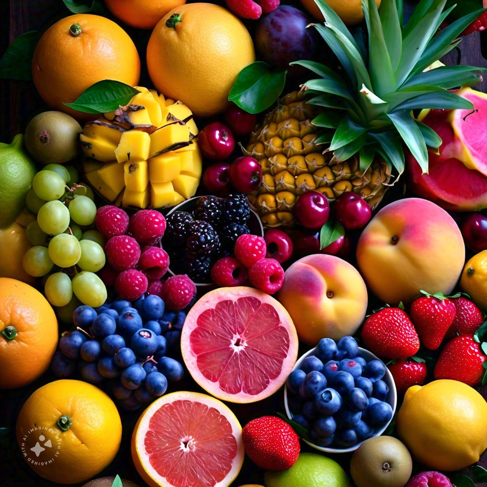

Introduction to Fruits
Fruits are delicious and nutritious foods that come from plants. They are packed with vitamins, minerals, and antioxidants that are essential for a healthy lifestyle. Eating a variety of fruits can improve your overall health and help prevent chronic diseases.

Popular Types of Fruits
Fruits can be categorized into various types, each with its own unique flavor and benefits. Here are some common categories:
- Citrus Fruits: Oranges, lemons, grapefruits.
- Berry Fruits: Strawberries, blueberries, raspberries.
- Stone Fruits: Peaches, plums, cherries.
- Tropical Fruits: Mangoes, pineapples, bananas.

Nutritional Benefits of Fruits
Fruits provide a range of essential nutrients, including:
- Vitamins: Vitamin C, Vitamin A, folate.
- Minerals: Potassium, magnesium.
- Fiber: Important for digestion and gut health.
Regular consumption of fruits has been linked to lower risks of heart disease, stroke, and certain types of cancer.
Contact Us
If you have any questions or want to know more about fruits, feel free to reach out to us!
Email: info@fruits.com
Phone: (123) 456-7890